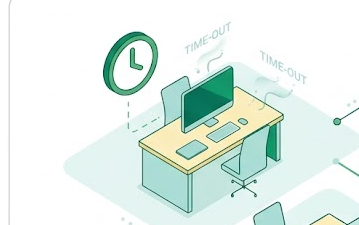
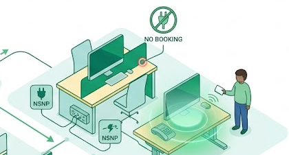
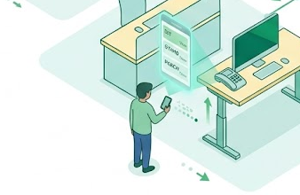
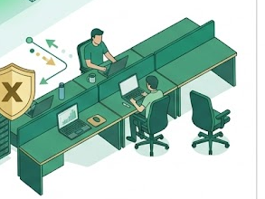

Optional Features
Turn on any features you'd like to configure — everything here is off by default, and the wizard skips straight past any switched-off feature's page.

Auto-Release on Idle
Automatically frees up a desk reservation if the desk hasn't been checked into within a set number of hours.
Off
No Swipe No Power (NSNP)
Desk power policy requiring Floorsense NSNP relay units — desks only power on for an active, checked-in booking.
Off
Follow Me Ergonomics (FME)
Lets end users save and apply their own sit/stand desk height presets via the Floorsense mobile app or handset. Requires motor integration with a Floorsense handset.
Off
Anti Desk Hogging
Restricts how many times a user can book the same desk within a rolling time window, to encourage cross-team mixing.
Off